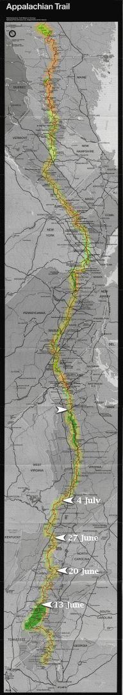

| Home | The Fox | Statistics | Maps | Churches |
StatusConfirmed - Evening 17 July 1998:Confirmed - the Fox is at Front Royal, VA Confirmed - 943.7 miles complete (43.58%) Confirmed - 1221.8 miles to go (56.42%) Front Royal and On Schedule18 July 1998 The Fox reported this evening that he is in Front Royal, Viginia, a bustling tourist town that is the northern portal into the Shenandoah Valley whose eastern ridge he has hiked over the last five days. The weather has been great and the Fox is pleased to have made up for an earlier delay and getting back on schedule. He also achieved his goal of eating three restaurant meals in a single day: breakfast at the Big Meadows campground, lunch at Skyland, and dinner at Panorama. |

Legend
|